1. Getting Started — Hello World
The simplest possible Jepia add-on: a single custom item with a texture.
import { Addon, Item } from 'jepia';
const addon = new Addon('HelloWorld', 'My first Jepia add-on', [1, 0, 0]);
const diamond = new Item('Custom Diamond', 'hello:diamond');
diamond.setMaxStackSize(64).addTexture('textures/items/custom_diamond.png');
addon.addItem(diamond);
await addon.generate('./output');Running this script produces a complete behavior pack and resource pack under ./output/, ready to load in Minecraft Bedrock.
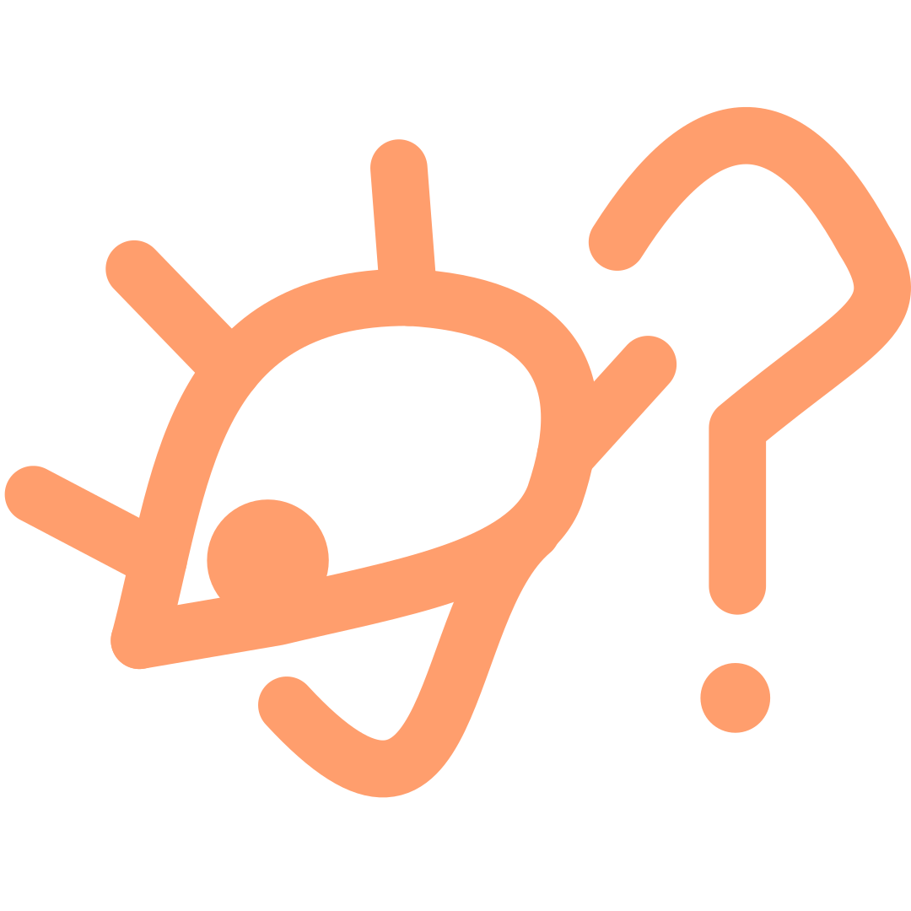
bun run my_addon.ts to run your script directly.Generated File Structure
output/
behavior_pack/
manifest.json
items/
custom_diamond.json
resource_pack/
manifest.json
textures/
items/
custom_diamond.png2. Tech Mod — Items, Blocks & Recipes
A realistic tech-mod example demonstrating items with components, machine blocks, recipes, and loot tables.
Sample Textures
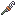
wrench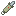
powered_drill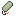
electric_motor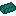
composite_ingot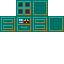
electric_furnace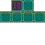
solar_panel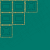
machine_blockItems with Components
import { Addon, Item, Block, Recipe, LootTable } from 'jepia';
const addon = new Addon('TechMod', 'Industrial technology add-on', [1, 0, 0]);
// --- Tools ---
const wrench = new Item('Wrench', 'techmod:wrench');
wrench
.addTexture('textures/items/tools/wrench.png')
.setMaxStackSize(1)
.addComponent('minecraft:durability', { max_durability: 250 })
.addComponent('minecraft:hand_equipped', { value: true })
.addComponent('minecraft:can_destroy_in_creative', { value: true });
const drill = new Item('Powered Drill', 'techmod:powered_drill');
drill
.addTexture('textures/items/tools/powered_drill.png')
.setMaxStackSize(1)
.addComponent('minecraft:durability', { max_durability: 1000 })
.addComponent('minecraft:hand_equipped', { value: true })
.addComponent('minecraft:mining_speed', {
default_speed: 1.0,
destroy_speeds: [
{ block: 'minecraft:stone', speed: 12.0 },
{ block: 'minecraft:iron_ore', speed: 15.0 },
{ block: 'minecraft:gold_ore', speed: 15.0 }
]
});
// --- Components / Materials ---
const motor = new Item('Electric Motor', 'techmod:electric_motor');
motor
.addTexture('textures/items/components/electric_motor.png')
.setMaxStackSize(16);
const ingot = new Item('Composite Ingot', 'techmod:composite_ingot');
ingot
.addTexture('textures/items/components/composite_ingot.png')
.setMaxStackSize(64);
addon.addItem(wrench);
addon.addItem(drill);
addon.addItem(motor);
addon.addItem(ingot);Machine Blocks
// --- Blocks ---
const electricFurnace = new Block('Electric Furnace', 'techmod:electric_furnace');
electricFurnace
.addTexture('textures/blocks/electric_furnace.png')
.addComponent('minecraft:destructible_by_mining', { seconds_to_destroy: 4.0 })
.addComponent('minecraft:destructible_by_explosion', { explosion_resistance: 10 })
.addComponent('minecraft:map_color', '#8B8B8B')
.addComponent('minecraft:light_emission', 8);
const solarPanel = new Block('Solar Panel', 'techmod:solar_panel');
solarPanel
.addTexture('textures/blocks/solar_panel.png')
.addComponent('minecraft:destructible_by_mining', { seconds_to_destroy: 2.0 })
.addComponent('minecraft:geometry', 'geometry.solar_panel')
.addComponent('minecraft:light_dampening', 0);
const machineBlock = new Block('Machine Block', 'techmod:machine_block');
machineBlock
.addTexture('textures/blocks/machine_block.png')
.addComponent('minecraft:destructible_by_mining', { seconds_to_destroy: 3.5 })
.addComponent('minecraft:destructible_by_explosion', { explosion_resistance: 15 });
addon.addBlock(electricFurnace);
addon.addBlock(solarPanel);
addon.addBlock(machineBlock);Recipes
// --- Recipes ---
// Composite Ingot: alloyed from iron + gold in a crafting table
const craftComposite = new Recipe('Craft Composite Ingot', 'techmod:craft_composite');
craftComposite.setShaped({
pattern: ['IGI', 'GIG', 'IGI'],
key: {
I: { item: 'minecraft:iron_ingot' },
G: { item: 'minecraft:gold_ingot' }
},
result: { item: 'techmod:composite_ingot', count: 4 }
});
// Electric Motor: composite ingots + redstone
const craftMotor = new Recipe('Craft Electric Motor', 'techmod:craft_motor');
craftMotor.setShaped({
pattern: [' R ', 'CIC', ' R '],
key: {
R: { item: 'minecraft:redstone' },
C: { item: 'techmod:composite_ingot' },
I: { item: 'minecraft:iron_ingot' }
},
result: { item: 'techmod:electric_motor', count: 1 }
});
// Machine Block: composite ingots shell
const craftMachine = new Recipe('Craft Machine Block', 'techmod:craft_machine');
craftMachine.setShaped({
pattern: ['CCC', 'C C', 'CCC'],
key: {
C: { item: 'techmod:composite_ingot' }
},
result: { item: 'techmod:machine_block', count: 1 }
});
// Electric Furnace: machine block + motor + furnace
const craftFurnace = new Recipe('Craft Electric Furnace', 'techmod:craft_furnace');
craftFurnace.setShaped({
pattern: ['CCC', 'MFM', 'CRC'],
key: {
C: { item: 'techmod:composite_ingot' },
M: { item: 'techmod:electric_motor' },
F: { item: 'minecraft:furnace' },
R: { item: 'minecraft:redstone_block' }
},
result: { item: 'techmod:electric_furnace', count: 1 }
});
addon.addRecipe(craftComposite);
addon.addRecipe(craftMotor);
addon.addRecipe(craftMachine);
addon.addRecipe(craftFurnace);Loot Tables for Block Drops
// --- Loot Tables ---
const furnaceLoot = new LootTable('Electric Furnace Drop', 'techmod:electric_furnace');
furnaceLoot.addPool({
rolls: 1,
entries: [
{ type: 'item', name: 'techmod:electric_furnace', weight: 1 }
]
});
const solarLoot = new LootTable('Solar Panel Drop', 'techmod:solar_panel');
solarLoot.addPool({
rolls: 1,
entries: [
{ type: 'item', name: 'techmod:solar_panel', weight: 1 }
]
});
// Machine block drops itself + sometimes a bonus motor
const machineLoot = new LootTable('Machine Block Drop', 'techmod:machine_block');
machineLoot.addPool({
rolls: 1,
entries: [
{ type: 'item', name: 'techmod:machine_block', weight: 1 }
]
});
machineLoot.addPool({
rolls: 1,
entries: [
{ type: 'item', name: 'techmod:electric_motor', weight: 1 },
{ type: 'empty', weight: 3 }
]
});
addon.addLootTable(furnaceLoot);
addon.addLootTable(solarLoot);
addon.addLootTable(machineLoot);
// Generate the full add-on
await addon.generate('./output');3. Custom Entity with Components
Create a custom mob with health, movement, attack behavior, component groups, and events.
import { Addon, Entity } from 'jepia';
const addon = new Addon('CreaturePack', 'Custom creatures');
const golem = new Entity('Steel Golem', 'techmod:steel_golem');
golem
.setSpawnable(true)
.setSummonable(true)
.addComponent('minecraft:physics', {})
.addComponent('minecraft:health', { value: 50, max: 50 })
.addComponent('minecraft:movement', { value: 0.2 })
.addComponent('minecraft:attack', { damage: 8 })
.addComponentGroup('combat_mode', {
'minecraft:behavior.melee_attack': { speed_multiplier: 1.5 }
})
.addEvent('minecraft:on_target_acquired', {
add: { component_groups: ['combat_mode'] }
});
addon.addEntity(golem);
await addon.generate('./output');What Gets Generated
| File | Location | Purpose |
|---|---|---|
steel_golem.json |
behavior_pack/entities/ |
Server-side entity definition with components, events, and component groups |
steel_golem.entity.json |
resource_pack/entity/ |
Client-side entity definition linking textures, geometry, and render controllers |
en_US.lang |
resource_pack/texts/ |
Localized display name: entity.techmod:steel_golem.name=Steel Golem |
4. Materials and Rendering Pipeline
Jepia gives you full control over the Bedrock rendering pipeline: materials, texture layers, and render controllers. Here is a complete example wiring all three together on an entity.
Overview
| Concept | Class | Description |
|---|---|---|
| Material | Material |
GPU shader configuration (blend modes, defines, states) |
| Texture Layer | TextureLayer |
Typed texture reference (color, normal, emissive, MER) |
| Render Controller | RenderController |
Selects textures, geometry, and materials at render time |
| Vanilla Materials | VanillaMaterials |
Enum of all built-in Bedrock material identifiers |
Full Example
import {
Addon, Entity, Material, MaterialDefine, MaterialState,
BlendFactor, VanillaMaterials, TextureLayer,
RenderController, Molang
} from 'jepia';
// --- Material ---
// Create a glowing material that inherits from entity_alphablend
const glowMat = new Material('Glow Effect', 'techmod:glow')
.setParent(VanillaMaterials.ENTITY_ALPHABLEND)
.addDefine(MaterialDefine.USE_EMISSIVE)
.addState(MaterialState.Blending)
.setBlendSrc(BlendFactor.SourceAlpha)
.setBlendDst(BlendFactor.One);
// --- Texture Layers ---
// Create two skin variants as color layers
const skinA = TextureLayer.colorLayer(
'Skin A', 'techmod:skin_a', 'textures/entity/robot_a.png'
);
const skinB = TextureLayer.colorLayer(
'Skin B', 'techmod:skin_b', 'textures/entity/robot_b.png'
);
// --- Render Controller ---
// Build a render controller that selects between skins using q.variant
const rc = RenderController.fromTextureLayers(
'Robot RC', 'techmod:robot', [skinA, skinB], 'skins'
);
rc.setIsHurtColor({ r: '1.0', g: '0.0', b: '0.0', a: '0.5' });
// --- Entity ---
const robot = new Entity('Robot', 'techmod:robot');
robot.setMaterial(glowMat).setRenderController(rc);
robot.addComponent('minecraft:health', { value: 30 });
// --- Addon ---
const addon = new Addon('TechMod');
addon.addEntity(robot);
await addon.generate('./output');VanillaMaterials Reference
Use VanillaMaterials to reference any built-in Bedrock material as a parent:
import { Material, VanillaMaterials } from 'jepia';
// Opaque entity material (standard mobs)
const opaque = new Material('Solid', 'mymod:solid')
.setParent(VanillaMaterials.ENTITY);
// Alpha-tested material (leaves, glass panes)
const cutout = new Material('Cutout', 'mymod:cutout')
.setParent(VanillaMaterials.ENTITY_ALPHATEST);
// Translucent material (water, slime)
const translucent = new Material('Glass', 'mymod:glass')
.setParent(VanillaMaterials.ENTITY_ALPHABLEND);
// Emissive material (eyes, glowing parts)
const emissive = new Material('Eyes', 'mymod:eyes')
.setParent(VanillaMaterials.ENTITY_EMISSIVE_ALPHA);resource_pack/materials/ directory. If you only need vanilla materials, you do not need to create custom ones — just reference the built-in identifier on your entity.5. PBR Textures (Texture Sets)
Texture sets let you add physically-based rendering to your add-on for Vibrant Visuals (deferred rendering). Each texture set links a color map, normal map, and MER (Metalness / Emissive / Roughness) map.
Classic-to-PBR Migration
import { Addon, TextureSet } from 'jepia';
const addon = new Addon('PBRDemo', 'PBR texture demo');
// Standard texture set with color + normal + MER
const brickSet = new TextureSet('Brick PBR', 'mymod:brick_pbr');
brickSet
.setColor('textures/blocks/brick')
.setNormal('textures/blocks/brick_normal')
.setMER('textures/blocks/brick_mer');
addon.addTextureSet(brickSet);Vibrant Visuals MERS Texture Set
For full Vibrant Visuals support, use the MERS format (Metalness, Emissive, Roughness, Subsurface Scattering):
// MERS texture set for Vibrant Visuals
const glowStone = new TextureSet('Glowstone PBR', 'mymod:glowstone_pbr');
glowStone
.setColor('textures/blocks/glowstone')
.setNormal('textures/blocks/glowstone_normal')
.setMERS('textures/blocks/glowstone_mers');
addon.addTextureSet(glowStone);
await addon.generate('./output');Generated Output
Each TextureSet produces a .texture_set.json file alongside the texture:
// resource_pack/textures/blocks/brick.texture_set.json
{
"format_version": "1.16.100",
"minecraft:texture_set": {
"color": "brick",
"normal": "brick_normal",
"metalness_emissive_roughness": "brick_mer"
}
}// resource_pack/textures/blocks/glowstone.texture_set.json
{
"format_version": "1.16.100",
"minecraft:texture_set": {
"color": "glowstone",
"normal": "glowstone_normal",
"metalness_emissive_roughness_subsurface": "glowstone_mers"
}
}6. Texture Atlas
The TextureAtlas class packs multiple textures into a single atlas image for optimal GPU memory usage. It supports shelf and maxrects packing strategies.
import { Addon, Entity, Texture, TextureAtlas } from 'jepia';
// Create a 1024x1024 atlas with 8px padding between entries
const atlas = new TextureAtlas(
'Mob Atlas', 'techmod:mob_atlas', 1024, 1024, 'packed', 8
);
// Add texture entries with their source dimensions
const tex1 = new Texture('Skin 1', 'techmod:skin1', 'textures/entity/skin1.png');
const tex2 = new Texture('Skin 2', 'techmod:skin2', 'textures/entity/skin2.png');
atlas.addEntry(tex1, 256, 256);
atlas.addEntry(tex2, 256, 512);
// Pack using the shelf strategy
const uvMap = await atlas.pack('shelf');
// Inspect optimization and memory reports
console.log(atlas.getOptimizationReport());
console.log(atlas.getMemoryReport());Optimization Report
The optimization report shows packing efficiency and wasted space:
TextureAtlas Optimization Report: Mob Atlas
Strategy: shelf
Atlas Size: 1024 x 1024 (1,048,576 px)
Entries: 2
Used Area: 196,608 px (18.75%)
Wasted: 851,968 px (81.25%)
Suggestion: Consider a smaller atlas (512x1024) for better utilization.Memory Report
TextureAtlas Memory Report: Mob Atlas
Format: RGBA8 (4 bytes/pixel)
Resolution: 1024 x 1024
Memory: 4.00 MB
Budget: Within default 16 MB entity atlas budget.Applying Atlas UVs to an Entity
// Use the UV map returned from pack() to set entity UVs
const mob = new Entity('Custom Mob', 'techmod:custom_mob');
mob.addComponent('minecraft:health', { value: 20 });
// The UV map contains normalized coordinates for each entry
for (const [texId, uv] of uvMap.entries()) {
console.log(`${texId}: u=${uv.u}, v=${uv.v}, w=${uv.width}, h=${uv.height}`);
}
const addon = new Addon('TechMod');
addon.addEntity(mob);
await addon.generate('./output');7. Packaging (.mcaddon)
Use the Packager to bundle your behavior pack and resource pack into a distributable .mcaddon file.
import { Packager } from 'jepia';
const packager = new Packager({
outputPath: './dist',
addonName: 'TechMod',
format: 'mcaddon',
});
await packager.package('./output/behavior_pack', './output/resource_pack');Packager Options
| Option | Type | Description |
|---|---|---|
outputPath |
string |
Directory where the packaged file will be written |
addonName |
string |
Name used for the output file (e.g., TechMod.mcaddon) |
format |
'mcaddon' | 'mcpack' | 'zip' |
Output archive format |
Output
dist/
TechMod.mcaddon ← Double-click to install in Minecraft.mcaddon format is a ZIP file containing both .mcpack files. Players can double-click it to import directly into Minecraft Bedrock Edition.8. Configuration File
Place a jepia.config.json in your project root to persist settings across builds. Jepia reads this file automatically.
{
"name": "TechMod",
"description": "Industrial technology for Minecraft Bedrock",
"version": [1, 2, 0],
"authors": ["YourName"],
"license": "MIT",
"target_version": "1.21.0",
"uuid": {
"behavior_pack": "a1b2c3d4-e5f6-7890-abcd-ef1234567890",
"resource_pack": "f9e8d7c6-b5a4-3210-fedc-ba0987654321"
},
"output": {
"path": "./output",
"clean_before_build": true
},
"packaging": {
"format": "mcaddon",
"output_path": "./dist"
}
}Configuration Options
| Key | Type | Default | Description |
|---|---|---|---|
name |
string |
— | Add-on display name |
description |
string |
"" |
Add-on description in manifest |
version |
[number, number, number] |
[1, 0, 0] |
Semantic version array |
target_version |
string |
"1.21.0" |
Minimum Minecraft engine version |
uuid.behavior_pack |
string |
auto-generated | Persistent UUID for the behavior pack |
uuid.resource_pack |
string |
auto-generated | Persistent UUID for the resource pack |
output.path |
string |
"./output" |
Directory for generated packs |
output.clean_before_build |
boolean |
false |
Delete output directory before generating |
UUID Persistence
Jepia handles UUIDs in two ways:
- Auto-generated: If no
uuidsection exists injepia.config.json, Jepia generates random UUIDs on the first build and writes them back to the config file. Subsequent builds reuse the same UUIDs. - Manual: You can set UUIDs explicitly in the config. This is useful when migrating an existing add-on to Jepia — use the UUIDs from your existing
manifest.jsonfiles.
Always commit jepia.config.json to version control so that UUIDs are shared across your team.
9. Dynamic Render Controllers
Advanced render controller patterns for entities that change appearance at runtime.
Shapeshifter Pattern (propertyToIndex)
Use a block property or entity property to select a texture from an array at runtime:
import { RenderController, TextureLayer, Molang } from 'jepia';
// Create texture variants
const formA = TextureLayer.colorLayer('Form A', 'mymod:form_a', 'textures/entity/shifter_a.png');
const formB = TextureLayer.colorLayer('Form B', 'mymod:form_b', 'textures/entity/shifter_b.png');
const formC = TextureLayer.colorLayer('Form C', 'mymod:form_c', 'textures/entity/shifter_c.png');
// Build render controller with property-driven index
const rc = RenderController.fromTextureLayers(
'Shapeshifter RC', 'mymod:shapeshifter', [formA, formB, formC], 'forms'
);
// Select texture based on an entity property
// q.property('mymod:form_index') returns 0, 1, or 2
rc.setTextureIndex('forms', Molang.query('property', "'mymod:form_index'"));Sheep Wool / Sheared Geometry Switching
Switch geometry based on a component group (like vanilla sheep):
import { RenderController, Entity, Molang } from 'jepia';
const sheep = new Entity('Custom Sheep', 'mymod:custom_sheep');
// Add component groups for wool states
sheep.addComponentGroup('woolly', {
'minecraft:geometry': { value: 'geometry.sheep.woolly' }
});
sheep.addComponentGroup('sheared', {
'minecraft:geometry': { value: 'geometry.sheep.sheared' }
});
// Events to toggle between states
sheep.addEvent('mymod:shear', {
remove: { component_groups: ['woolly'] },
add: { component_groups: ['sheared'] }
});
sheep.addEvent('mymod:regrow', {
remove: { component_groups: ['sheared'] },
add: { component_groups: ['woolly'] }
});
// Render controller selects geometry based on entity flag
const sheepRC = new RenderController('Sheep RC', 'mymod:sheep');
sheepRC.setGeometry(
Molang.conditional('q.is_sheared', "'geometry.sheep.sheared'", "'geometry.sheep.woolly'")
);
sheep.setRenderController(sheepRC);Part Visibility for Armor
Show or hide geometry bones based on equipped armor:
import { RenderController, Molang } from 'jepia';
const armorRC = new RenderController('Armor RC', 'mymod:armor_display');
// Show helmet bone only when helmet is equipped
armorRC.addPartVisibility('helmet', Molang.query('is_item_equipped', "'slot.armor.head'"));
// Show chestplate bone only when chestplate is equipped
armorRC.addPartVisibility('chestplate', Molang.query('is_item_equipped', "'slot.armor.chest'"));
// Show boots bone only when boots are equipped
armorRC.addPartVisibility('boots', Molang.query('is_item_equipped', "'slot.armor.feet'"));
// Leggings always visible as base mesh
armorRC.addPartVisibility('leggings', '1.0');UV Animation for Atlas Scrolling
Animate texture UVs to create scrolling effects (conveyor belts, energy beams, water flow):
import { RenderController, Molang } from 'jepia';
const scrollRC = new RenderController('Scroll RC', 'mymod:conveyor');
// Scroll the V coordinate over time for an animated conveyor belt
// math.mod wraps the value so it loops continuously
scrollRC.setUVAnimation({
offset: [
'0.0', // U stays fixed
Molang.expr('math.mod(q.life_time * 0.5, 1.0)') // V scrolls
],
scale: ['1.0', '1.0']
});
// Energy beam with faster horizontal scroll
const beamRC = new RenderController('Beam RC', 'mymod:energy_beam');
beamRC.setUVAnimation({
offset: [
Molang.expr('math.mod(q.life_time * 2.0, 1.0)'), // U scrolls fast
'0.0'
],
scale: ['0.5', '1.0'] // Tile the texture 2x horizontally
});['0.25', '0.25'] for a 4x4 grid) and step the offset in increments.10. Scripted Add-on
Jepia can include Minecraft Script API code alongside your JSON components in a single TypeScript file. Script callbacks are extracted at build time and bundled into behavior_pack/scripts/main.js.
addon.script() runs inside Minecraft Bedrock at runtime. The @minecraft/* modules are provided by the game engine. Jepia extracts the callback source at build time via Function.prototype.toString() and rewrites ctx.server references into proper ES module imports.Inline Script — Entity Hit Event
A fire sword that applies a burn effect when it hits an enemy:
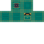
magic_oreimport { Addon, Item, Block } from 'jepia';
const addon = new Addon('ScriptedAddon', 'Scripting demo', [1, 0, 0], [1, 21, 60]);
// --- JSON components (build-time) ---
const fireSword = new Item('Fire Sword', 'scriptedaddon:fire_sword');
fireSword.setMaxStackSize(1)
.addComponent('minecraft:durability', { max_durability: 250 })
.addTexture('textures/items/fire_sword.png');
const magicOre = new Block('Magic Ore', 'scriptedaddon:magic_ore');
magicOre.setLightEmission(8).addTexture('textures/blocks/magic_ore.png');
addon.addItem(fireSword).addBlock(magicOre);
// --- Runtime script (runs inside Minecraft) ---
addon.script((ctx) => {
const { world, system } = ctx.server;
world.afterEvents.entityHitEntity.subscribe((event) => {
const attacker = event.damagingEntity;
const victim = event.hitEntity;
if (attacker.typeId !== 'minecraft:player') return;
const equip = attacker.getComponent('minecraft:equippable');
if (!equip) return;
const held = equip.getEquipment('Mainhand');
if (held && held.typeId === 'scriptedaddon:fire_sword') {
victim.addEffect('minecraft:fire_resistance', 60, { amplifier: 0 });
system.run(() => attacker.sendMessage('Your sword blazes!'));
}
});
});
await addon.generate('./output');File-Based Script
Point to an existing TypeScript file for complex scripts or shared code:
// Bundle one or more external files alongside inline blocks
addon.scriptFile('./scripts/events.ts');
addon.scriptFile('./scripts/commands.ts');
// File-based scripts can use normal imports:
// import { world } from '@minecraft/server'; ← Jepia marks as external automatically
await addon.generate('./output');11. Custom Components V2
Custom Components V2 bridges JSON block/item definitions with Script API handlers. Jepia auto-generates the startup registration code — you just define handlers inline.
Block — Crumble on Step
A "cloud block" that turns to air when stepped on:
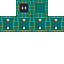
cloud_block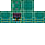
pulse_blockimport { Addon, Block, Item } from 'jepia';
const addon = new Addon('CustomComponentsAddon', 'Custom Components V2 demo', [1, 0, 0], [1, 21, 60]);
// --- Block: turns to air when stepped on ---
const cloudBlock = new Block('Cloud Block', 'myaddon:cloud_block');
cloudBlock.setFriction(0.1).setLightEmission(4);
cloudBlock.addCustomComponent(
'myaddon:crumble_on_step',
{
// `system` is imported by the generated startup code — available at runtime.
onStepOn: (event) => {
const { block, dimension } = event;
system.run(() => {
dimension.runCommand(`setblock ${block.x} ${block.y} ${block.z} air`);
});
},
onEntityFallOn: (event) => {
const { entity } = event;
if (entity.typeId === 'minecraft:player') {
entity.sendMessage('The cloud crumbles beneath you!');
}
},
},
{ fragile: true } // optional JSON params in block component entry
);
// --- Block: random-tick particle effect ---
const pulseBlock = new Block('Pulse Block', 'myaddon:pulse_block');
pulseBlock.setLightEmission(12);
pulseBlock.addCustomComponent('myaddon:pulse_effect', {
onRandomTick: (event) => {
const { block, dimension } = event;
system.run(() => {
dimension.spawnParticle('minecraft:endrod', {
x: block.x + 0.5, y: block.y + 1, z: block.z + 0.5,
});
});
},
});
addon.addBlock(cloudBlock).addBlock(pulseBlock);Item — Custom Use Handler
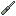
magic_wand// --- Item: coin flip on use ---
const luckyCoin = new Item('Lucky Coin', 'myaddon:lucky_coin');
luckyCoin.setMaxStackSize(64);
luckyCoin.addCustomComponent('myaddon:flip_coin', {
onUse: (event) => {
const { source: player } = event;
system.run(() => {
if (Math.random() > 0.5) {
player.sendMessage('Heads! Fortune smiles upon you.');
player.addEffect('minecraft:luck', 200, { amplifier: 0 });
} else {
player.sendMessage('Tails! Better luck next time.');
}
});
},
});
// --- Item: durability warning ---
const magicWand = new Item('Magic Wand', 'myaddon:magic_wand');
magicWand.setMaxStackSize(1)
.addComponent('minecraft:durability', { max_durability: 50 });
magicWand.addCustomComponent('myaddon:wand_charges', {
onBeforeDurabilityDamage: (event) => {
const { itemStack, attackingEntity } = event;
if (attackingEntity?.typeId === 'minecraft:player') {
const remaining = itemStack.maxDurability - itemStack.durabilityDamage;
if (remaining <= 5) {
attackingEntity.sendMessage(`Warning: ${remaining} charges left!`);
}
}
},
onUse: (event) => {
const { source: player } = event;
system.run(() => {
player.sendMessage('The wand crackles with magic!');
player.addEffect('minecraft:night_vision', 60, { amplifier: 0 });
});
},
});
addon.addItem(luckyCoin).addItem(magicWand);
// Mix with an inline script block — merged into the same scripts/main.js
addon.script((ctx) => {
const { world } = ctx.server;
world.afterEvents.playerJoin.subscribe((event) => {
const players = world.getAllPlayers();
for (const p of players) p.sendMessage(event.playerName + ' joined!');
});
});
await addon.generate('./output');12. Custom Commands
Register custom slash commands using the Minecraft Script API's command registry. Jepia generates the full startup registration in scripts/main.js automatically.
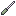
tool item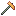
tool itemimport {
Addon, Item,
CustomCommandPermissionLevel,
CustomCommandParamType,
} from 'jepia';
const addon = new Addon('CommandsAddon', 'Custom slash commands demo', [1, 0, 0], [1, 21, 60]);
const tool = new Item('Repair Wrench', 'myaddon:repair_wrench');
tool.setMaxStackSize(1).addComponent('minecraft:durability', { max_durability: 100 });
addon.addItem(tool);
// --- /myaddon:heal ---
addon.addCustomCommand({
name: 'myaddon:heal',
description: 'Heal targeted players to full health',
permissionLevel: CustomCommandPermissionLevel.GameDirectors,
mandatoryParameters: [
{ type: CustomCommandParamType.PlayerSelector, name: 'targets' },
],
// `system` is in scope from the generated startup import — runs in Minecraft only.
callback: (origin, targets) => {
system.run(() => {
for (const player of targets) {
const health = player.getComponent('minecraft:health');
if (health) health.setCurrentValue(health.effectiveMax);
player.sendMessage('You have been healed!');
}
});
},
});
// --- /myaddon:give_ore ---
// With a custom enum for the ore type selection
addon.addCustomCommand(
{
name: 'myaddon:give_ore',
description: 'Give a player a specific ore type',
permissionLevel: CustomCommandPermissionLevel.GameDirectors,
mandatoryParameters: [
{ type: CustomCommandParamType.PlayerSelector, name: 'target' },
{ type: CustomCommandParamType.Enum, name: 'oreType' },
],
callback: (origin, target, oreType) => {
system.run(() => {
for (const p of target) {
p.runCommand(`give @s myaddon:${oreType}_ore`);
p.sendMessage(`Received ${oreType} ore!`);
}
});
},
},
[
{ name: 'OreType', values: ['iron', 'copper', 'gold', 'magic'] },
]
);
await addon.generate('./output'); system.run(). The system reference is imported automatically by the generated startup code — you don't need to import it yourself inside the callback.13. Spawn Rules
Control where and when your custom entities naturally appear in the world. Spawn rules live in behavior_pack/spawn_rules/ and are evaluated every spawn cycle.
import { Addon, Entity, SpawnRule } from 'jepia';
const addon = new Addon('CreaturePack', 'Custom creature spawning');
// A surface animal that spawns in forests during daytime
const forestCritter = new Entity('Forest Critter', 'myaddon:forest_critter');
forestCritter
.setSpawnable(true)
.setSummonable(true)
.addComponent('minecraft:health', { value: 10, max: 10 })
.addComponent('minecraft:movement', { value: 0.3 });
const critterRule = new SpawnRule('Forest Critter Spawning', 'myaddon:forest_critter');
critterRule
.setPopulationControl('animal')
.addCondition({
'minecraft:spawns_on_surface': {},
'minecraft:brightness_filter': {
min: 7,
max: 15,
adjust_for_weather: true
},
'minecraft:weight': { default: 100 },
'minecraft:biome_filter': {
test: 'has_biome_tag',
value: 'forest'
}
});
addon.addEntity(forestCritter);
addon.addSpawnRule(critterRule);
await addon.generate('./output');Underground Monster
A monster that only spawns underground in darkness — classic dungeon mob setup.
import { SpawnRule } from 'jepia';
const caveMonster = new SpawnRule('Cave Monster Spawning', 'myaddon:cave_monster');
caveMonster
.setPopulationControl('monster')
.addCondition({
'minecraft:spawns_underground': {},
'minecraft:brightness_filter': {
min: 0,
max: 7,
adjust_for_weather: false
},
'minecraft:weight': { default: 50 },
'minecraft:difficulty_filter': {
min: 'easy',
max: 'hard'
},
'minecraft:height_filter': {
min: -64,
max: 16
}
});
addon.addSpawnRule(caveMonster);Generated Output
{
"format_version": "1.8.0",
"minecraft:spawn_rules": {
"description": {
"identifier": "myaddon:forest_critter",
"population_control": "animal"
},
"conditions": [
{
"minecraft:spawns_on_surface": {},
"minecraft:brightness_filter": { "min": 7, "max": 15, "adjust_for_weather": true },
"minecraft:weight": { "default": 100 },
"minecraft:biome_filter": { "test": "has_biome_tag", "value": "forest" }
}
]
}
}"animal", "monster", "water_animal", "ambient" — each have their own global cap. Monsters share a cap with vanilla hostile mobs, so use a low minecraft:weight if your mob shouldn't dominate spawning.14. Trade Tables
Define what your custom merchant entities buy and sell. Trade tables live in behavior_pack/trading/. Reference the file in an entity's minecraft:economy_trade_table component.
import { Addon, Entity, TradeTable } from 'jepia';
const addon = new Addon('TechMod', 'Industrial tech add-on');
// --- Trade table ---
const merchantTrades = new TradeTable('Scrap Merchant Trades', 'techmod:scrap_merchant');
// Novice tier — always available from the start
merchantTrades.addTier({
total_exp_required: 0,
trades: [
{
wants: [{ item: 'minecraft:emerald', quantity: 1 }],
gives: [{ item: 'techmod:composite_ingot', quantity: 2 }],
max_uses: 8,
reward_exp: true,
trader_exp: 1
},
{
wants: [{ item: 'techmod:composite_ingot', quantity: 4 }],
gives: [{ item: 'minecraft:emerald', quantity: 1 }],
max_uses: 16,
reward_exp: true,
trader_exp: 1
}
]
});
// Apprentice tier — unlocks after earning some XP
merchantTrades.addTier({
total_exp_required: 10,
trades: [
{
wants: [{ item: 'minecraft:emerald', quantity: 3 }],
gives: [{ item: 'techmod:electric_motor', quantity: 1 }],
max_uses: 5,
reward_exp: true,
trader_exp: 2
}
]
});
// Expert tier — random selection from a group
merchantTrades.addTier({
total_exp_required: 70,
groups: [
{
num_to_select: 1,
trades: [
{
wants: [{ item: 'minecraft:emerald', quantity: 8 }],
gives: [{ item: 'techmod:powered_drill', quantity: 1 }]
},
{
wants: [{ item: 'minecraft:emerald', quantity: 6 }],
gives: [{ item: 'techmod:electric_furnace', quantity: 1 }]
}
]
}
]
});
addon.addTradeTable(merchantTrades);
// --- Entity that uses the trade table ---
const merchant = new Entity('Scrap Merchant', 'techmod:scrap_merchant');
merchant
.setSummonable(true)
.setSpawnable(false)
.addComponent('minecraft:health', { value: 20, max: 20 })
.addComponent('minecraft:movement', { value: 0.2 })
.addComponent('minecraft:economy_trade_table', {
display_name: 'Scrap Merchant',
table: 'trading/techmod/scrap_merchant.json',
new_screen: true
});
addon.addEntity(merchant);
await addon.generate('./output');Generated Output
{
"tiers": [
{
"total_exp_required": 0,
"trades": [
{
"wants": [{ "item": "minecraft:emerald", "quantity": 1 }],
"gives": [{ "item": "techmod:composite_ingot", "quantity": 2 }],
"max_uses": 8,
"reward_exp": true,
"trader_exp": 1
}
]
}
]
}groups with num_to_select to randomize which trades a merchant offers — great for giving each merchant instance a unique feel without defining multiple trade tables.15. World Generation
Phase 8 adds four new component types for customizing world generation: Biome, Feature, FeatureRule, and Dimension. All four write to the behavior pack.
Biome
Biomes live in behavior_pack/biomes/. They define climate, surface materials, and generation tags. Feature rules target biomes by tag.
import { Addon, Biome } from 'jepia';
const addon = new Addon('CrystalMod', 'Crystal biome example');
const crystalForest = new Biome('Crystal Forest', 'crystalmod:crystal_forest');
crystalForest
.setClimate({ temperature: 0.4, downfall: 0.5 })
.setSurfaceBuilder('minecraft:overworld', {
top_material: 'crystalmod:crystal_grass',
mid_material: 'minecraft:dirt',
sea_material: 'minecraft:water',
})
.addTag('forest')
.addTag('cold')
.setCreatureSpawnProbability(0.2)
.setHumid(true);
addon.addBiome(crystalForest);Feature
Features live in behavior_pack/features/. The feature type determines the root JSON key. Use feature rules to control where they spawn.
import { Addon, Feature } from 'jepia';
const addon = new Addon('CrystalMod', 'Crystal ore example');
const crystalOre = new Feature('Crystal Ore', 'crystalmod:crystal_ore_feature');
crystalOre
.setType('minecraft:ore_feature')
.setData({
count: 6,
replace_rules: [
{
places_block: 'crystalmod:crystal_ore',
may_replace: ['minecraft:stone', 'minecraft:deepslate'],
},
],
});
addon.addFeature(crystalOre);Feature Rule
Feature rules live in behavior_pack/feature_rules/. They attach a feature to one or more biomes via tag filters and configure the placement pass and scatter distribution.
import { Addon, FeatureRule } from 'jepia';
const addon = new Addon('CrystalMod', 'Crystal ore rule example');
const crystalOreRule = new FeatureRule('Crystal Ore Rule', 'crystalmod:crystal_ore_overworld');
crystalOreRule
.setPlacesFeature('crystalmod:crystal_ore_feature')
.addBiomeFilter({ test: 'has_biome_tag', operator: '==', value: 'overworld' })
.setPlacementPass('feature_placement_pass')
.setDistribution({
iterations: 8,
scatter_chance: { numerator: 2, denominator: 3 },
x: { distribution: 'uniform', extent: [0, 16] },
y: { distribution: 'uniform', extent: [0, 64] },
z: { distribution: 'uniform', extent: [0, 16] },
});
addon.addFeatureRule(crystalOreRule);Dimension
Dimensions live in behavior_pack/dimensions/. They define Y bounds and generator type. Note: current Bedrock behavior pack dimensions "slice" existing terrain — areas outside bounds become inaccessible voids.
import { Addon, Dimension } from 'jepia';
const addon = new Addon('CrystalMod', 'Crystal dimension example');
const crystalDim = new Dimension('Crystal Void', 'crystalmod:crystal_void');
crystalDim
.setBounds(0, 256)
.setGeneratorType('overworld');
addon.addDimension(crystalDim);16. Visual & Client Systems
Phase 9 adds five new component types for resource-pack visual and audio systems: Particle, Animation, AnimationController, Attachable, and ClientBiome. All five write to the resource pack.
Particle
Particle effects live in resource_pack/particles/. The fluent API covers emitter rate, lifetime, shape, and appearance, with Molang curves and lifecycle events supported via helpers.
import { Addon, Particle } from 'jepia';
const addon = new Addon('CrystalMod', 'Crystal particle example');
const sparkle = new Particle('Crystal Sparkle', 'crystalmod:sparkle');
sparkle
.setRenderParameters('particles_add', 'textures/particle/particles')
.setEmitterRate('steady', { spawn_rate: 6, max_particles: 150 })
.setEmitterLifetime('looping', { active_time: 1 })
.setEmitterShape('sphere', { radius: 0.5, direction: 'outwards' })
.setParticleLifetime(1.5)
.setAppearanceBillboard({
size: [0.1, 0.1],
facing_camera_mode: 'lookat_xyz',
})
.setAppearanceTinting(['0.6', '0.9', '1.0', '1.0']);
addon.addParticle(sparkle);Animation
Animations live in resource_pack/animations/. Each Animation instance maps to one named entry in the animations dict. The identifier is auto-derived from the component id ("crystalmod:walk" → "animation.crystalmod.walk") and can be overridden.
import { Addon, Animation } from 'jepia';
const addon = new Addon('CrystalMod', 'Crystal animation example');
const walkAnim = new Animation('Walk', 'crystalmod:golem_walk');
walkAnim
.setLoop(true)
.setAnimationLength(1.0)
.addBoneKeyframes('right_leg', 'rotation', {
'0.0': [0, 0, 0],
'0.5': [45, 0, 0],
'1.0': [0, 0, 0],
})
.addBoneKeyframes('left_leg', 'rotation', {
'0.0': [0, 0, 0],
'0.5': [-45, 0, 0],
'1.0': [0, 0, 0],
});
addon.addAnimation(walkAnim);Animation Controller
Animation controllers live in resource_pack/animation_controllers/. They define state machines that blend and transition animations based on Molang conditions. The controller identifier is derived from the component id ("crystalmod:golem" → "controller.animation.crystalmod.golem").
import { Addon, AnimationController } from 'jepia';
const addon = new Addon('CrystalMod', 'Crystal animation controller example');
const golemCtrl = new AnimationController('Golem Move', 'crystalmod:golem');
golemCtrl
.setInitialState('idle')
.addState('idle', {
animations: ['idle_anim'],
transitions: [{ walk: 'query.modified_move_speed > 0.01' }],
blend_transition: 0.2,
})
.addState('walk', {
animations: ['walk_anim'],
transitions: [{ idle: 'query.modified_move_speed <= 0.01' }],
blend_transition: 0.2,
});
addon.addAnimationController(golemCtrl);Attachable
Attachables live in resource_pack/attachables/. They define how items appear when held or worn by entities, referencing materials, textures, geometry, and render controllers.
import { Addon, Attachable } from 'jepia';
const addon = new Addon('CrystalMod', 'Crystal attachable example');
const drill = new Attachable('Powered Drill', 'crystalmod:powered_drill');
drill
.setMaterials({ default: 'entity_alphatest' })
.setTextures({ default: 'textures/items/powered_drill' })
.setGeometry({ default: 'geometry.powered_drill' })
.setRenderControllers(['controller.render.item_default'])
.setScripts({
parent_setup: "variable.main_hand = c.is_item_name_any('slot.weapon.mainhand', 0, 'crystalmod:powered_drill');",
animate: [{ hold_first_person: 'variable.is_first_person' }],
});
addon.addAttachable(drill);Client Biome
Client biomes live in resource_pack/biomes_client/. They define the visual and audio properties of a biome (water color, sky color, fog, grass and foliage tinting). Pair with a server-side Biome for a complete biome.
import { Addon, Biome, ClientBiome } from 'jepia';
const addon = new Addon('CrystalMod', 'Crystal biome example');
// Server-side biome (behavior pack)
const crystalForest = new Biome('Crystal Forest', 'crystalmod:crystal_forest');
crystalForest
.setClimate({ temperature: 0.3, downfall: 0.6 })
.setSurfaceBuilder('minecraft:overworld', { top_material: 'minecraft:snow', mid_material: 'minecraft:stone' })
.addTag('forest')
.addTag('cold');
addon.addBiome(crystalForest);
// Client-side biome (resource pack)
const crystalForestClient = new ClientBiome('Crystal Forest Client', 'crystalmod:crystal_forest');
crystalForestClient
.setWaterColor('#a0d8ef')
.setSkyColor('#c8e8ff')
.setFogAppearance('#ddeeff', 0.85, 1.0)
.setGrassColor('#cce8ff')
.setFoliageColor('#aad4ff');
addon.addClientBiome(crystalForestClient);Particle for its trail effect, an Animation for its walk cycle, an AnimationController to blend idle/walk/attack states, an Attachable for a held weapon, and a ClientBiome to give its home biome a distinctive visual feel.Example 17: Phase 10 — Dialogue, Fog, Camera, Sounds & Plugins
This example showcases all six Phase 10 additions: NPC dialogue with buttons, a custom camera preset, a fog definition, a sound event, a block culling rule, and a plugin for build logging.
NPC Dialogue
import { Addon, Dialogue } from 'jepia';
const addon = new Addon('PhasetenAddon', 'Phase 10 demo add-on');
// --- Dialogue ---
const dlg = new Dialogue('Blacksmith Dialogue', 'phaseten:blacksmith');
dlg.addScene('greeting', {
npc_name: 'Old Blacksmith',
text: 'Back again? I have fresh stock.',
on_open_commands: ['/effect @initiator saturation 5 1'],
buttons: [
{ name: 'Buy tools', commands: ['/give @initiator iron_pickaxe 1'] },
{ name: 'Sell items', commands: ['/dialogue open @e[type=phaseten:blacksmith,r=3] @initiator sell'] },
{ name: 'Goodbye', commands: [] },
],
});
dlg.addScene('sell', {
npc_name: 'Old Blacksmith',
text: "Drop your items in the chest, I'll evaluate them.",
});
addon.addDialogue(dlg);Camera Preset & Fog
import { Camera, Fog } from 'jepia';
// Cinematic over-shoulder camera
const cam = new Camera('Cinematic Cam', 'phaseten:cinematic');
cam.setInheritFrom('minecraft:follow_orbit')
.setRadius(5)
.setViewOffset(1.5, 0.3)
.setEntityOffset(0, 1.6, 0)
.setStartingRotation(-8, 0);
addon.addCamera(cam);
// Eerie underground fog
const fog = new Fog('Underground Fog', 'phaseten:underground');
fog.setDistanceFog('air', {
fog_start: 0.6,
fog_end: 0.9,
fog_color: '#1a1a2e',
render_distance_type: 'render',
})
.setDistanceFog('lava', {
fog_start: 0,
fog_end: 3,
fog_color: '#ff4000',
render_distance_type: 'fixed',
})
.setVolumetricDensity('air', { max_density: 0.4, uniform: false,
zero_density_height: 60, max_density_height: 30 });
addon.addFog(fog);Sound Definitions
import { SoundDefinition } from 'jepia';
const sndForge = new SoundDefinition('Forge Clank', 'phaseten.forge.clank');
sndForge.setCategory('block')
.addSoundFile('sounds/phaseten/forge_clank1')
.addSoundEntry({ name: 'sounds/phaseten/forge_clank2', volume: 0.8, pitch: [0.9, 1.1] })
.setDistance(4, 24);
addon.addSoundDefinition(sndForge);
const sndAmbient = new SoundDefinition('Dungeon Ambient', 'phaseten.ambient.dungeon');
sndAmbient.setCategory('ambient')
.addSoundFile('sounds/phaseten/dungeon_loop');
addon.addSoundDefinition(sndAmbient);Block Culling Rule
import { BlockCullingRule } from 'jepia';
// Custom stained glass — cull same-block faces
const glassCull = new BlockCullingRule('Stained Glass Culling', 'phaseten:stained_glass');
(['north', 'south', 'east', 'west', 'up', 'down'] as const).forEach(dir => {
glassCull.addFaceRule('block', 0, dir, 'same_culling_layer');
});
addon.addBlockCullingRule(glassCull);Plugin System
import type { JepiaPlugin } from 'jepia';
const buildLogger: JepiaPlugin = {
name: 'build-logger',
onBeforeGenerate({ addonName, outputPath, metadata }) {
metadata.startTime = Date.now();
console.log(`[build-logger] Starting "${addonName}" → ${outputPath}`);
},
onAfterGenerate({ addonName, metadata }) {
const elapsed = Date.now() - (metadata.startTime as number);
console.log(`[build-logger] "${addonName}" built in ${elapsed}ms`);
},
};
addon.use(buildLogger);
await addon.generate('./output');metadata to pass data between onBeforeGenerate and onAfterGenerate, or to store references that multiple plugins share. Plugins are called in registration order and support async functions.Example 18: Phase 12 — Jigsaw Structures
This example demonstrates the jigsaw structure system: procedurally assembled structures using template pools, structure sets for placement control, and processor lists for block transformations.
Jigsaw Structure
import { Addon, JigsawStructure } from 'jepia';
const addon = new Addon('JigsawDemo', 'Jigsaw structures demo');
// Define a trail-ruins-style underground structure
const ruins = new JigsawStructure('Trail Ruins', 'demo:trail_ruins');
ruins
.setStep('underground_structures')
.setTerrainAdaptation('bury')
.setStartPool('demo:trail_ruins/tower')
.setMaxDepth(7)
.setStartHeight({ type: 'constant', value: { absolute: -15 } })
.setHeightmapProjection('world_surface')
.setMaxDistanceFromCenter({ horizontal: 80, vertical: 80 })
.addBiomeFilter({ test: 'has_biome_tag', value: 'has_structure_trail_ruins' });
addon.addJigsawStructure(ruins);Template Pool
import { TemplatePool } from 'jepia';
// Pool of tower-top variations with weighted selection
const towerPool = new TemplatePool('Tower Top Pool', 'demo:trail_ruins/tower_top');
towerPool
.addElement(
{ location: 'demo:trail_ruins/tower_top_1',
processors: 'demo:archaeology' },
2 // weight — twice as likely as variant 2
)
.addElement(
{ location: 'demo:trail_ruins/tower_top_2',
projection: 'minecraft:terrain_matching' },
1
)
.addEmptyElement(1) // 25 % chance of nothing
.setFallback('minecraft:empty');
addon.addTemplatePool(towerPool);Structure Set
import { StructureSet } from 'jepia';
// Controls how far apart trail ruins spawn
const ruinsSet = new StructureSet('Trail Ruins Set', 'demo:trail_ruins');
ruinsSet
.setPlacement({
type: 'minecraft:random_spread',
salt: 83469867,
separation: 8, // min 8 chunks apart within a grid cell
spacing: 34, // grid cell = 34 chunks
spread_type: 'linear',
})
.addStructure('demo:trail_ruins', 1);
addon.addStructureSet(ruinsSet);Processor List
import { ProcessorList } from 'jepia';
// Block transformations applied during structure placement
const proc = new ProcessorList('Archaeology Processor', 'demo:archaeology');
proc
.addBlockIgnore(['minecraft:structure_void'])
.addProtectedBlocks('minecraft:features_cannot_replace')
.addRule({
input_predicate: {
predicate_type: 'minecraft:random_block_match',
block: 'minecraft:gravel',
probability: 0.2,
},
output_state: { name: 'minecraft:suspicious_gravel' },
})
.addRule({
input_predicate: {
predicate_type: 'minecraft:block_match',
block: 'minecraft:sand',
},
output_state: { name: 'minecraft:suspicious_sand' },
});
addon.addProcessorList(proc);
// Generate the complete add-on
await addon.generate('./output');behavior_pack/worldgen/ in four subdirectories: structures/, template_pools/, structure_sets/, and processors/. All use format_version: "1.21.20".